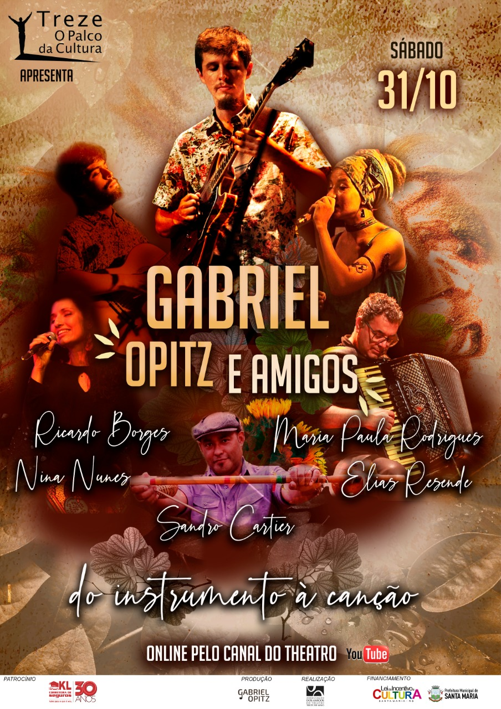
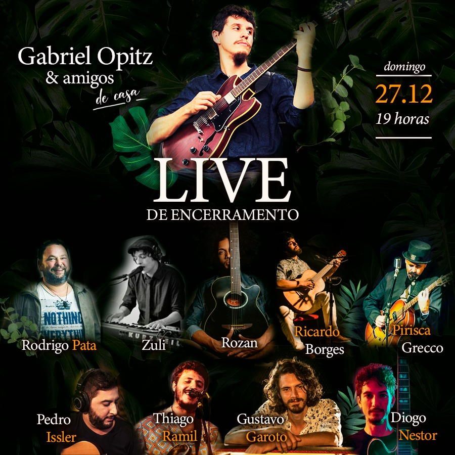
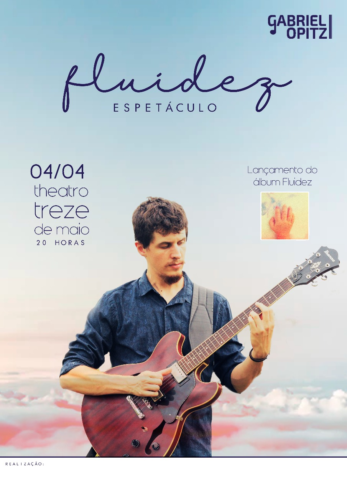

Aqui você encontrará vídeos de apresentações, gravações e aulas...
Mais informaçõesBEM-VINDO AO MEU SITE
Quem sou eu?
"O jovem Gabriel Opitz é um dos maiores talentos da atual safra de músicos gaúchos. Guitarrista de mão cheia, vai do jazz à música brasileira com uma fluidez rara..." DoMonte Jazz Festival/SM.
Fluidez... Gabriel faz da música sua linguagem com o mundo. É nela que encontra o espaço, fluidez e intensidade para dizer tudo aquilo que as palavras não alcançam. O cotidiano e as pessoas ao redor é que trazem ao músico a inspiração e o encaixe das melodias criadas para deixar o seu legado e sua impressão daquilo que é e pode ser sua vida.
Espetáculos
Meus últimos shows realizados
Samba e Choro dedilhados pelas cordas de Gabriel Opitz (2023)

 >
>
Gabriel Opitz e Amigos - Theatro 13 de Maio/Sm (2021)

 >
>
Gabriel Opitz e Amigos: de casa (2020)

 >
>
Fluidez - show de lançamento do EP (2019)
Siga-me
Nas redes sociais
No instagram eu posto imagens e vídeos da minha rotina diária de estudo, passeios e coisas bacanas...
Mais informaçõesAqui você encontrará vídeos de apresentações, gravações e aulas...
Mais informações